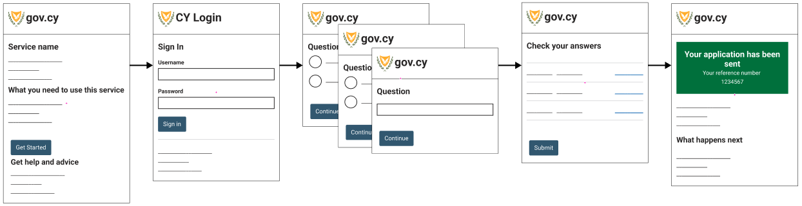

This is a older version. Check out the latest version of the design system.
Structuring a service
This guide explains how to structure an online service.
Basic structure
The basic structure of a service should:
- Start with an informative start page
- If needed, ask the users to sign-in
- Gather information from the users, one question at a time
- Let the users check their answers before submitting
- Show the users a confirmation of successful completion page.

Start page
Before starting the service, users should be presented with a page describing all the information they will need from the start, such as:
- What the service does
- Who it is for
- What is needed to use the service
- Other ways to apply
- How they can get help

Keep in mind that research has shown that users avoid reading long text, so keep your information minimal, and to the point and avoid using legal jargon.
This page usually resides on the GOV.CY portal.
One thing at a time
Prefer to split the questions across multiple pages with each page containing just one thing, for example:
- one piece of information you’re telling a user
- one decision they have to make
- one question they have to answer

User research will tell you when you can merge pages together. For example, if you’re designing an internal service for government users who need to repeat and switch between tasks quickly.
Keeping one thing on a page helps users to:
- understand what you’re asking them to do
- focus on the specific question and its answer
- reduce the stress of filling out humongous forms
- find their way through an unfamiliar process
- use the service on a mobile device
- recover easily from errors
It may also help to:
- save users’ answers automatically as they go
- capture analytics and statistics about each question
- handle branching questions and loops
- apply conditional logic and guide users to complete the service in a more relaxed manner
- direct the users to a specific question where they can change their answer (see check answers pattern).
Check your answers page
Use the check answers pattern to let users check their answers before submitting information to a service.

Confirmation page
After the users have submitted their application, present a confirmation page with a panel to tell them that they have successfully completed the transaction. This reassures the users their application has been filed and provides useful information on what will happen next.

Research has shown that users feel more at ease when:
- they are presented with a reference number for their application
- they receive a notification either by SMS or by email
- they can print or save the confirmation.
Contribute
If you have used or researched this pattern, please let us have your feedback, so we can make it better for everyone. Send us an email at dsf@dits.dmrid.gov.cy to get in touch.